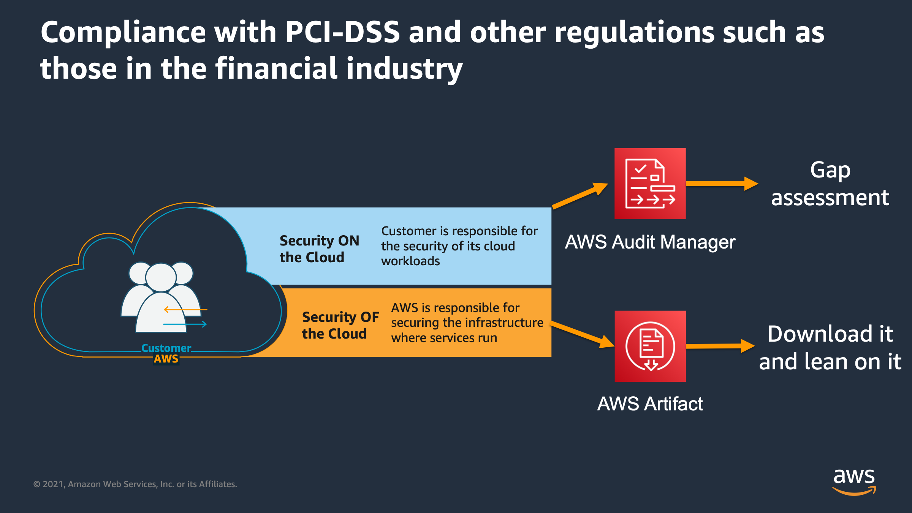

Beschreibung
Compliance im betriebswirtschaftlichen und juristischen Kontext bezeichnet die systematische Einhaltung von
Gesetzen, Verordnungen, Sicherheitsstandards und anderen relevanten Vorschriften durch Unternehmen. Dieser
ganzheitliche Ansatz ist von entscheidender Bedeutung, um sicherzustellen, dass Organisationen nicht nur die
gesetzlichen Anforderungen erfüllen, sondern auch ein Umfeld schaffen, das Sicherheits- und Schutzstandards
gewährleistet.
In der IT-Welt gewinnt Compliance zunehmend an Bedeutung, da Unternehmen verstärkt digitale Technologien
nutzen, um ihre Geschäftsprozesse zu optimieren und zu transformieren. Insbesondere die Einhaltung von
Datenschutzbestimmungen wie der EU-Datenschutz-Grundverordnung (DSGVO) oder dem California Consumer Privacy Act
(CCPA) ist von entscheidender Bedeutung, um die Privatsphäre und die Datenintegrität der Kunden zu
gewährleisten.
Darüber hinaus spielt die Informationssicherheit eine zentrale Rolle in der Compliance in der IT-Welt.
Unternehmen müssen sicherstellen, dass ihre IT-Systeme und Daten vor Bedrohungen wie Cyberangriffen, Datenlecks und
anderen Sicherheitsvorfällen geschützt sind. Dies erfordert die Implementierung von robusten Sicherheitsmaßnahmen
wie Firewalls, Verschlüsselungstechnologien, Zugriffskontrollen und regelmäßigen Sicherheitsaudits.
Ein weiterer wichtiger Aspekt der Compliance in der IT-Welt ist die Gewährleistung der Verfügbarkeit und
Integrität von Daten. Unternehmen müssen sicherstellen, dass ihre Daten zuverlässig und konsistent sind und dass sie
vor unbeabsichtigten Änderungen oder Löschungen geschützt sind. Dies erfordert die Implementierung von Backup- und
Wiederherstellungsverfahren sowie von Datenintegritätsprüfungen.
Neben den technischen Aspekten der Compliance müssen Unternehmen auch sicherstellen, dass ihre Mitarbeiter
über angemessene Schulungen und Schulungen in Bezug auf Datenschutz, Informationssicherheit und andere
Compliance-Themen verfügen. Nur durch ein gut informiertes und geschultes Personal können Unternehmen sicherstellen,
dass die Compliance-Richtlinien effektiv umgesetzt werden.
Insgesamt ist Compliance in der IT-Welt von entscheidender Bedeutung, um das Vertrauen von Kunden, Partnern
und anderen Interessengruppen zu stärken, rechtliche Probleme zu vermeiden und die Geschäftsziele nachhaltig zu
unterstützen. Durch die Implementierung von robusten Compliance-Strategien können Unternehmen nicht nur ihre
Sicherheit und Integrität gewährleisten, sondern auch ihre Wettbewerbsfähigkeit und ihren langfristigen Erfolg
fördern.
- AWS Artifact: AWS Artifact ist ein Self-Service-Portal für den Zugriff auf Compliance-Berichte und Zertifikate, die von AWS bereitgestellt werden. Diese Berichte und Zertifikate unterstützen Kunden dabei, die Einhaltung verschiedener Compliance-Programme und regulatorischer Anforderungen zu demonstrieren.
- SOC 2: SOC 2 steht für "Service Organization Control 2". Es ist ein Standard für die Bewertung der Sicherheit, Verfügbarkeit, Verarbeitungsintegrität, Vertraulichkeit und Datenschutzkontrolle von Serviceorganisationen. SOC 2-Berichte helfen Kunden dabei, das Vertrauen in die Dienste und Systeme von Serviceorganisationen zu stärken.
- PCI-DSS: PCI-DSS steht für "Payment Card Industry Data Security Standard". Dies ist ein Sicherheitsstandard, der von der Kreditkartenindustrie entwickelt wurde, um die Sicherheit sensibler Daten von Zahlungskarteninhabern zu gewährleisten. Organisationen, die Kreditkartentransaktionen verarbeiten, müssen PCI-DSS einhalten, um die Sicherheit ihrer Systeme und den Schutz von Kartendaten zu gewährleisten.
- GDPR: Die Datenschutz-Grundverordnung (DSGVO) ist eine EU-Verordnung, die den Datenschutz und die Privatsphäre von Personen innerhalb der Europäischen Union (EU) und des Europäischen Wirtschaftsraums (EWR) regelt. Die DSGVO enthält Vorschriften zur Verarbeitung personenbezogener Daten, einschließlich ihrer Erhebung, Speicherung, Übertragung und Löschung.
- HIPAA: HIPAA steht für "Health Insurance Portability and Accountability Act". Es handelt sich um ein US-amerikanisches Bundesgesetz, das Standards zum Schutz und zur Sicherheit von Gesundheitsinformationen festlegt. HIPAA betrifft insbesondere Organisationen im Gesundheitswesen, einschließlich Krankenhäusern, Arztpraxen und Versicherungsunternehmen.
- NIST 800-53: NIST 800-53 ist ein Rahmenwerk des National Institute of Standards and Technology (NIST) der Vereinigten Staaten. Es bietet umfassende Richtlinien für die Sicherheit von Informationssystemen und -infrastrukturen und enthält Kontrollen und Sicherheitsmaßnahmen, die von Bundesbehörden und Organisationen verwendet werden können, um die Sicherheit ihrer Informationen zu gewährleisten.
- Compliance im betriebswirtschaftlichen und juristischen Kontext bedeutet systematische Einhaltung von Gesetzen, Verordnungen, Sicherheitsstandards und anderen relevanten Vorschriften.
- Ziel ist Schaffung eines Umfelds, das Sicherheits- und Schutzstandards gewährleistet.
- In der IT-Welt gewinnt Compliance an Bedeutung, besonders durch Nutzung digitaler Technologien.
- Einhaltung von Datenschutzbestimmungen wie DSGVO und CCPA ist entscheidend für Datenschutz und Datenintegrität.
- Informationssicherheit ist zentral: Unternehmen müssen IT-Systeme und Daten vor Cyberangriffen und Datenlecks schützen.
- Implementierung von Sicherheitsmaßnahmen wie Firewalls, Verschlüsselung, Zugriffskontrolle und Sicherheitsaudits erforderlich.
- Gewährleistung von Datenverfügbarkeit und -integrität durch Backup- und Wiederherstellungsverfahren sowie Datenintegritätsprüfungen.
- Mitarbeiter müssen in Datenschutz, Informationssicherheit und Compliance geschult sein.
- Compliance in der IT-Welt stärkt das Vertrauen, vermeidet rechtliche Probleme und unterstützt Geschäftsziele.
- Durch robuste Compliance-Strategien können Sicherheit, Integrität, Wettbewerbsfähigkeit und langfristiger Erfolg gefördert werden.
Schlüsselwörter
Schlüsselworte bzw. Schlagworte sollen uns dabei helfen, einen Service leichter zu erkennen, wenn es um Prüfungsfragen geht. Ließ dir die Fragen richtig durch und achte auf folgende Schlüsselworte. Sie können dir bei der Beantwortung der Fragen helfen.
- Einhaltung von Vorschriften
- Sicherheitsstandards
- Audits und Prüfungen
- Datenschutz
- Risikomanagement
- Richtlinien und Best Practices
- Transparenz und Berichterstattung
- Automatisierung von Compliance-Prozessen
- Kontinuierliche Überwachung
- Unterstützung für branchenspezifische Anforderungen
Grafische Erklärung
Prüfung Fragen
- Welche Rolle spielt AWS Key Management Service (KMS) bei der Sicherstellung von Compliance in AWS, insbesondere im Hinblick auf Datenverschlüsselung?
- Welche Rolle spielt AWS Identity and Access Management (IAM) bei der Einhaltung von Compliance-Anforderungen in AWS, insbesondere in Bezug auf die Verwaltung von Zugriffsrechten?
- Wie unterstützt AWS Artifact Unternehmen bei der Einhaltung von Compliance-Richtlinien?